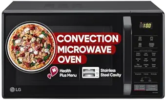

HP 255 G10 Laptop (16GB RAM, 512GB SSD, Ryzen 10crore)
A fast and reliable laptop ideal for daily work, browsing, and multitasking.
₹59,990
Buy Now


LG 28 L Convection Microwave Oven
Perfect for baking, grilling, and quick heating with a large 28L capacity.
₹8,799
Buy Now